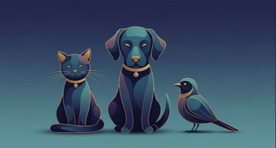

Cover Your Tail
A simple, opt-in check-in app for everyday life.

For your tail, for the tails you care for (human or other), and the moments when being accounted for matters most.
Cover Your Tail creates an effortless automated check-in system without daily calls, constant texts, or relying on someone to manually check in.
The app sends you scheduled check-ins at times you choose. When you confirm you’re okay, nothing else happens. No messages. No interruptions.
Use daily Check-ins when everything is A-OK and you don't need to tell anyone.
Use Activities to cover your tail when you go on an adventure, no matter how small.
Don't care to announce your plans? No worries - Just Cover Your Tail on the way out.
How it works
1. You schedule your Check-ins or Activities (once a day or as often as you want)
2. When your alert arrives via push notification, you tap it. Done.
3. If you miss it, the app retries at the intervals you chose
4. If you miss them all, the app sends you a text asking you to confirm that you are OK
5. If you still don't respond, the app sends your pre-written message to the contacts you already added to your team. No big deal, just you letting your team know whatever you want them to know.
Everything is configured by you ahead of time — so if you’re unable to respond, the system does what you already told it to do.
Who it’s for
Cover Your Tail is for anyone who wants peace of mind without required constant communication.
It’s especially useful for people who:
• live alone, live together in remote areas, or spend time solo (students, remote workers, travelers)
• go running, hiking, cycling, or spend time outdoors
• take trips, commutes, or rideshares
• enjoy an occasional adventure (and don't always spill every detail)
• go on dates or meetups (anywhere a backup plan is a good idea)
• are single parents, or parents whose spouse travels frequently
• have pets (who wait patiently at home when you are out)
• have health, mobility, or fall-risk concerns at any age
Privacy & control
Cover Your Tail only sends messages based on the settings you configure in advance and only to contacts you explicitly approve.
Location sharing is optional and disabled by default. If enabled, location information is only used according to your settings and is not shared with contacts unless you choose to include it.
No continuous monitoring. No background tracking. No alerts unless a check-in is missed.
In some situations, notified contacts may be able to share updates related to a missed check-in.
Peace of mind for you — and every tail you’re responsible for 🐾
Status
Cover Your Tail is currently in active development.